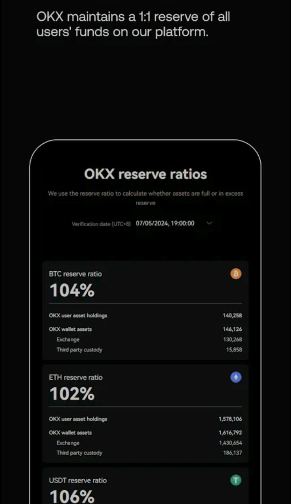

What is OKX?
Based on a survey of 118 countries and regions, OKX came in second in the Global Crypto Exchange Usage & Impact Survey. Chinese entrepreneur Star Xu founded this organization in 2017. OKX is based in Seychelles and claims to have as many as 50 million active users globally.

Key Features
- OKX enables a variety of trading options, such as margin trading which provides leverage up to 125x.
- It has over 350 cryptocurrencies to trade, including Bitcoin (BTC), Ethereum (ETH), and their own token OKB, and provides more than 500 trading pairs.
- The trading costs are around 0.1 % but customers holding more OKB or trading more frequently could reduce % fees.
- Besides, OKX provides a crypto wallet for users with more than 30 supported networks for the management of digital assets.
- The marketplace allows the users to trade NFTs and buy and sell tokens, and NFTs to make profit.
Recent Developments
OKX is increasing its geographical footprint and is in the process of opening offices in Turkey and Australia in addition to obtaining a Dubai operating license. This helps the brand get visibility in France or Spain for example.
Limited Access
Despite its reach in over 200 countries worldwide, OKX is not able to provide any services to the United States residents because of legal restrictions. The exchange is also aiming to expand its activities in Hong Kong as they seek to obtain a local license
Download OKX
Download OKX from Google Play Store
Release Information
October 29, 2019, latest update on October 22, 2024, current version 6.91.1.
When it comes to cryptocurrency trading, OKX stands out as one of the top trading platforms, offering a mix of user-friendly features and powerful tools for every trader. Whether you’re a beginner just testing the waters or an experienced trader looking to level up, OKX has something for everyone to give. In this guide, we’ll cover how to get started with trading, how to trade like a pro, and how to minimize your risks—all explained in an easy-to-follow way.
How to Get Started with OKX
Starting on OKX is straightforward and takes just a few simple steps that can help you in your trading. Here’s how you can set up your account and begin trading:
- Visit OKX Online
Go to the official OKX website or download their app from your device’s app store. Be cautious—make sure it’s the genuine platform to protect your data and not access for third parties.
- Sign Up for Free
- Click on “Sign Up.”
- Enter your email or phone number and create a strong password.
- Agree to the terms and hit “Create Account.”
- Verify Your Identity
OKX requires identity verification (KYC) to unlock all features before trading. Upload your ID (passport, driver’s license, or national ID) and follow the instructions. The process is quick and ensures your account stays secure.
- Secure Your Account
- Set up Two-Factor Authentication (2FA) to add an extra layer of security.
- Use a phishing code to help identify real communications from OKX.
- Add Funds to Your Wallet
- Go to the “Deposit” section in your account.
- Choose your preferred currency for trading (crypto or fiat) and follow the instructions to fund your wallet.
That’s it! Your account is ready to go for trading. From here, you can explore OKX’s features, like spot trading, futures, and staking your coins. Take your time to get familiar with the platform before diving into trades.
How to Trade Like a Pro on OKX
Becoming a skilled trader doesn’t happen overnight, but with dedication and the right tools, you can level up quickly. Here’s how OKX can help you sharpen your skills and master the art of trading:
- Understand the Basics
Start by learning the fundamentals—like what market orders are, how stop-losses work, and what leverage means. OKX has a variety of guides and tutorials to help you understand these concepts easily.
- Practice Without Risk
Use OKX’s demo trading feature to practice with virtual funds. This lets you test strategies, learn the tools, and gain confidence before using real money.
- Analyze the Market Like a Pro
OKX provides advanced charting tools with indicators like Bollinger Bands, RSI, and MACD. Spend time analyzing trends and price movements to make informed trades.
- Follow Experienced Traders
Not sure where to start? OKX offers copy trading, where you can follow top traders and replicate their strategies. Watch how they trade, learn their methods, and apply them to your own trades.
- Create Your Strategy
- Decide your trading style: Are you a day trader, swing trader, or long-term investor?
- Set clear goals, like when to buy or sell.
- Stick to your plan and avoid making impulsive decisions.
- Stay Informed and Keep Learning
The crypto market changes fast. Read news, join webinars, and follow OKX updates to stay ahead. Continuous learning is key to becoming a successful trader.
Trading like a pro takes practice and patience. By using OKX’s tools and resources, you’ll steadily improve and develop the confidence to make smart trades.
How to Protect Yourself from Losses on OKX Trading
Trading cryptocurrencies is exciting, but it’s not without risks. The good news? With some smart planning, you can minimize losses and trade safely on OKX. Here’s how:
- Start Small
If you’re a new trader, don’t jump in with a big investment. Start with a small amount to get comfortable with the platform and trading process.
- Use Risk Management Tools
OKX has helpful tools like stop-loss orders that close your trade automatically if the market moves against you. This feature is a must for minimizing losses.
- Diversify Your Portfolio
Don’t put all your money into one cryptocurrency. Spread your investments across different coins to balance out your risk.
- Be Careful with Leverage
Leverage can boost your earnings, but it can also amplify your losses. Use it sparingly and only when you fully understand the risks.
- Set a Budget
Decide in advance how much you’re willing to risk in trading and don’t exceed that limit. Never trade with money you cannot afford to lose.
- Stay Informed
Market trends, news, and global events can all impact crypto prices. Keep up to date with OKX’s news section and market insights to make informed decisions.
- Keep Your Emotions in Check
The crypto market can be unpredictable, but emotional trading often leads to mistakes. Stay calm, stick to your plan, and avoid chasing losses.
- Secure Your Account
Enable all of OKX’s security features, like 2FA and withdrawal whitelists, to ensure your account and funds are protected.
By following these tips, you can reduce your risks and trade with confidence, even in a volatile market.